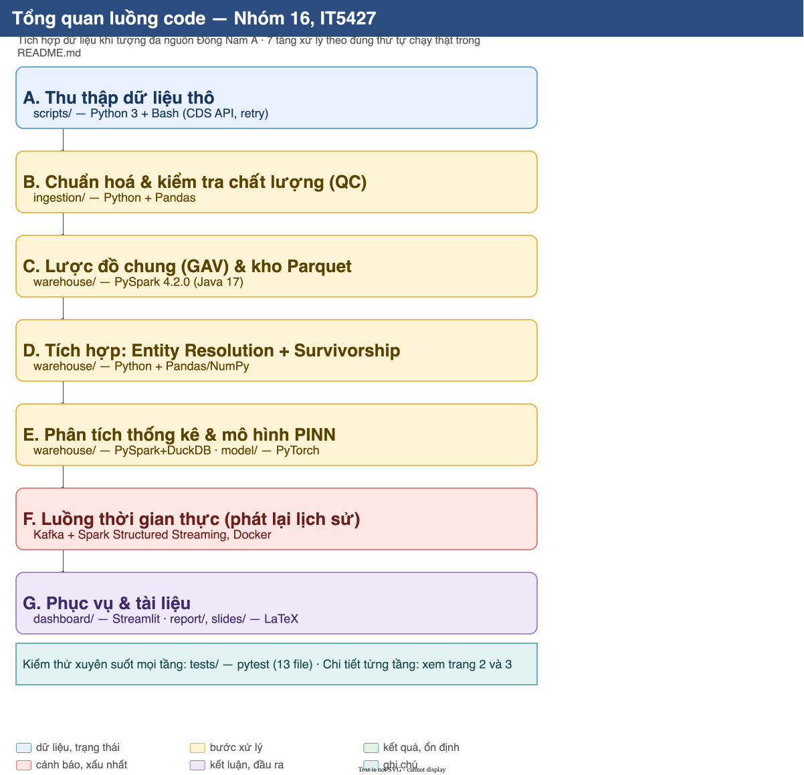
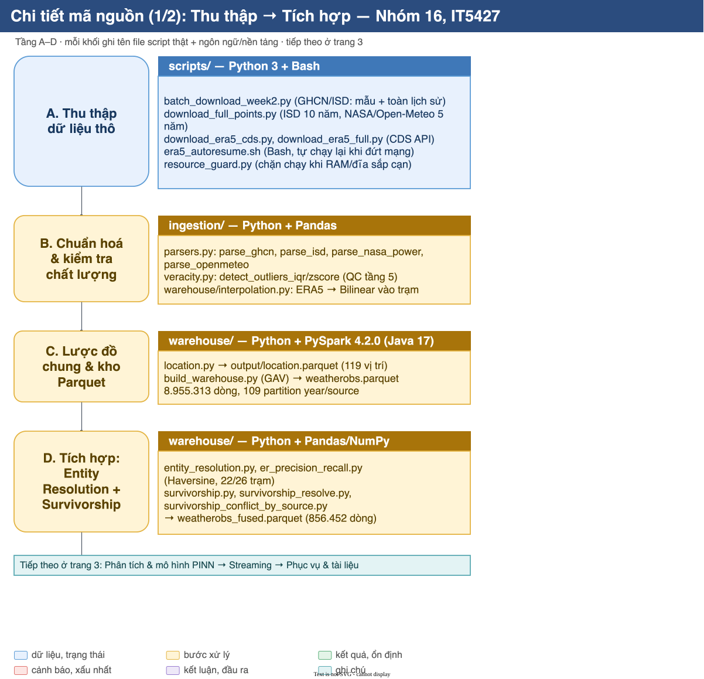
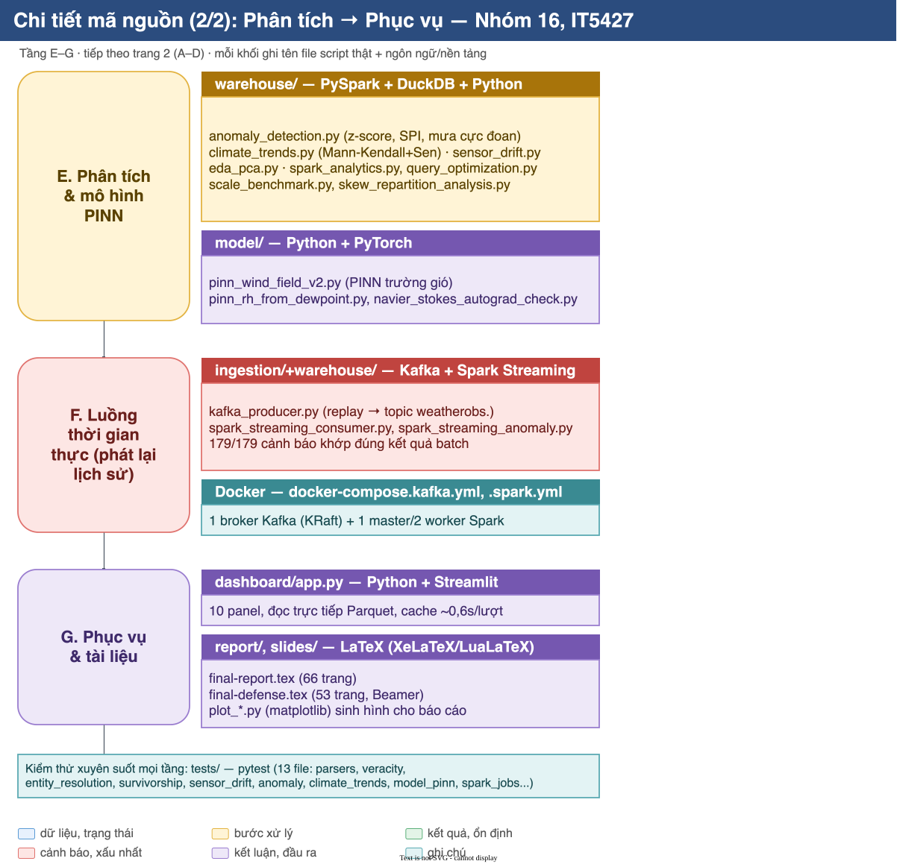

IT5427 — Tích hợp và xử lý dữ liệu lớn · Nhóm 16
Bản đồ đầy đủ các script thật trong repo, đúng theo thứ tự chạy trong README.md,
kèm ngôn ngữ và nền tảng dùng ở từng tầng — từ tải dữ liệu thô tới báo cáo LaTeX cuối cùng.
Một luồng chính từ trên xuống. Kiểm thử (pytest) chạy xuyên suốt mọi tầng, không phải một bước riêng ở cuối.

Mỗi khối bên phải là tên file script thật trong repo kèm vai trò, không phải tên rút gọn.

Tầng E rẽ thành hai nhánh con (phân tích thống kê bằng PySpark/DuckDB, và mô hình PINN bằng PyTorch) trước khi gộp lại ở tầng F–G.

Tổng hợp từ requirements.txt, hai file docker-compose.*.yml, và các thư mục mã nguồn thật.
| Ngôn ngữ / thư viện | Vai trò trong pipeline | Dùng ở đâu |
|---|---|---|
| Python 3 | Ngôn ngữ chính, xuyên suốt mọi tầng | scripts/, ingestion/, warehouse/, model/, dashboard/ |
| Bash | Script tự chạy lại khi tải ERA5 bị đứt mạng | scripts/era5_autoresume.sh |
| PySpark 4.2.0 (cần Java 17) | Xây kho Parquet, phân tích quy mô lớn, Structured Streaming | warehouse/build_warehouse.py, spark_analytics.py, spark_streaming_*.py |
| Pandas / NumPy / PyArrow | Parse, QC, Entity Resolution, Survivorship (dữ liệu vừa RAM) | ingestion/parsers.py, warehouse/entity_resolution.py, survivorship*.py |
| DuckDB | Truy vấn phân tích nhanh hơn Spark 7–8 lần ở quy mô hiện tại | Đối chiếu trong scale_benchmark.py, dùng khi demo trực tiếp |
| PyTorch | Huấn luyện mô hình PINN có ràng buộc vật lý cho trường gió | model/pinn_wind_field_v2.py và các file pinn_*.py khác |
| Kafka (KRaft) + Spark Structured Streaming | Mô phỏng luồng thời gian thực bằng phát lại dữ liệu lịch sử | ingestion/kafka_producer.py, warehouse/spark_streaming_*.py |
| Docker / Docker Compose | Dựng cụm Spark (1 master + 2 worker) và Kafka (1 broker) | docker-compose.spark.yml, docker-compose.kafka.yml |
| Streamlit | Dashboard 10 panel đọc trực tiếp kho Parquet | dashboard/app.py |
| LaTeX (XeLaTeX / LuaLaTeX, Beamer) | Báo cáo cuối kỳ và slide bảo vệ | report/final-report.tex, slides/final-defense.tex |
| Matplotlib | Sinh hình cho báo cáo (phân bố, benchmark, bản đồ khu vực) | warehouse/plot_*.py |
| pytest | Kiểm thử tự động, 13 file, chạy xuyên suốt mọi tầng | tests/ |